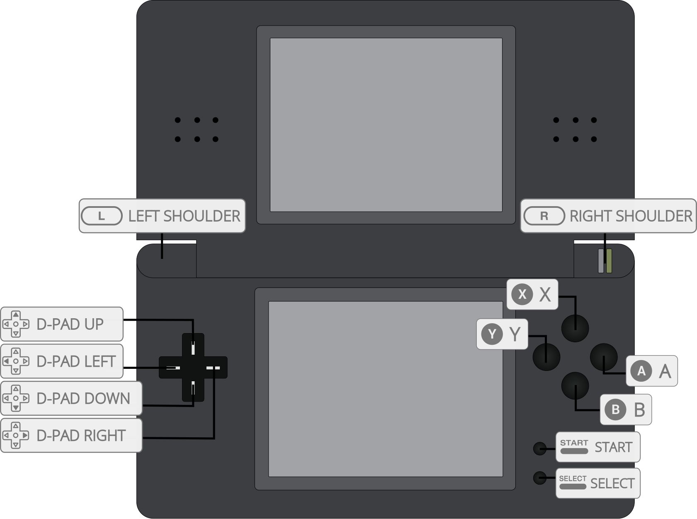

An up-and-coming Nintendo DS emulator by StapleButter, ported to libretro.
The melonDS core has been authored by
The melonDS core is licensed under
A summary of the licenses behind RetroArch and its cores can be found here.
Content that can be loaded by the melonDS core have the following file extensions:
RetroArch database(s) that are associated with the melonDS core:
Required or optional firmware files go in the frontend's system directory.
| Filename | Description | md5sum |
|---|---|---|
| bios7.bin | NDS ARM7 BIOS - Required | df692a80a5b1bc90728bc3dfc76cd948 |
| bios9.bin | NDS ARM9 BIOS - Required | a392174eb3e572fed6447e956bde4b25 |
| firmware.bin | NDS Firmware - Required | 145eaef5bd3037cbc247c213bb3da1b3 |
| dsi_bios7.bin | DSi ARM7 BIOS - Optional | |
| dsi_bios9.bin | DSi ARM9 BIOS - Optional | |
| dsi_firmware.bin | DSi Firmware - Optional | |
| dsi_nand.bin | DSi NAND - Optional | |
| dsi_sd_card.bin | DSi SD Card - Optional |
Frontend-level settings or features that the melonDS core respects.
| Feature | Supported |
|---|---|
| Restart | ✔ |
| Screenshots | ✔ |
| Saves | ✔ |
| States | ✔ |
| Rewind | ✔ |
| Netplay | ✕ |
| Core Options | ✔ |
| RetroAchievements | ✔ |
| RetroArch Cheats | ✔ |
| Native Cheats | ✕ |
| Controls | ✔ |
| Remapping | ✔ |
| Multi-Mouse | ✕ |
| Rumble | ✕ |
| Sensors | ✕ |
| Camera | ✕ |
| Location | ✕ |
| Subsystem | ✕ |
| Softpatching | ✕ |
| Disk Control | ✕ |
| Username | ✕ |
| Language | ✕ |
| Crop Overscan | ✕ |
| LEDs | ✕ |
The melonDS core's library name is 'melonDS'
The melonDS core saves/loads to/from these directories.
Frontend's Cache directory
| File | Description |
|---|---|
| *.sav | Cartridge battery save |
The melonDS core supports the following device type(s) in the controls menu, bolded device types are the default for the specified user(s):

| User 1 input descriptors | RetroPad Inputs |
|---|---|
| B | |
| Y | |
| Select | |
| Start | |
| Up | |
| Down | |
| Left | |
| Right | |
| A | |
| X | |
| L | |
| R | |
| Swap Screens | |
| Close Lid | |